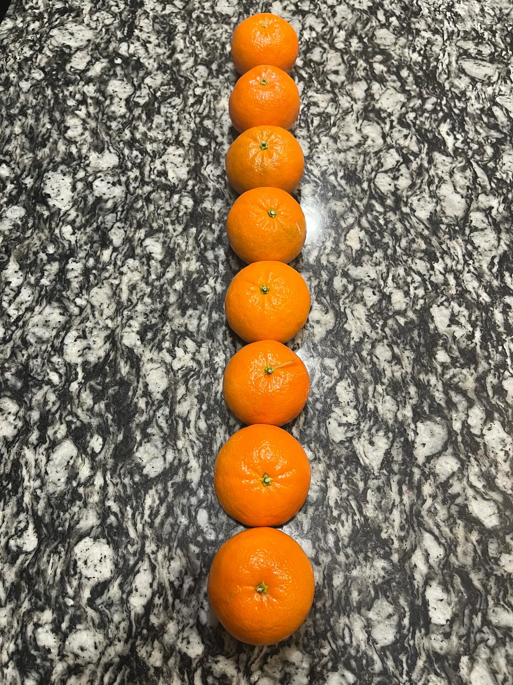
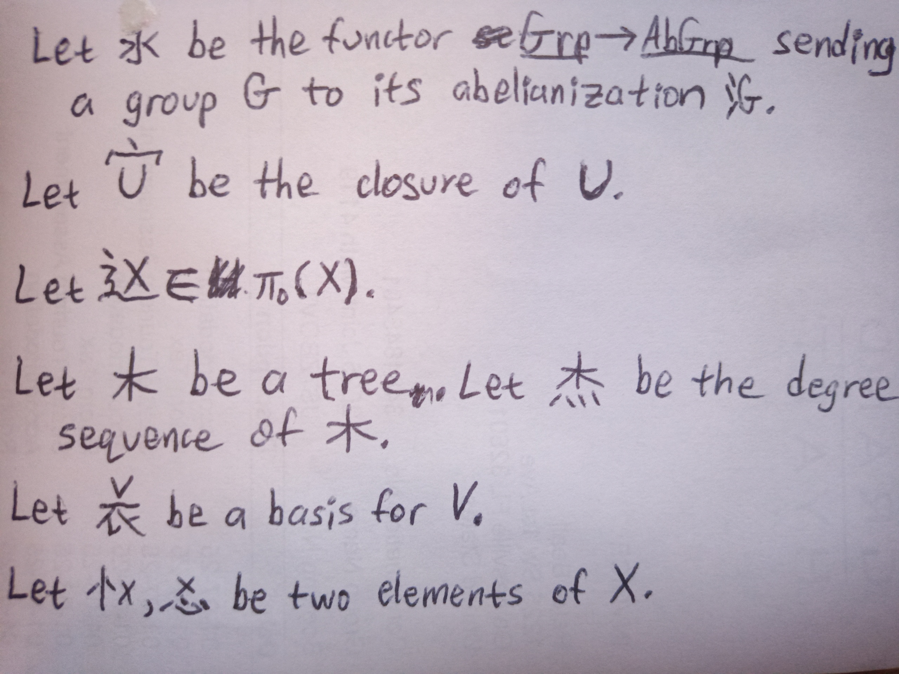

For some of these, I used MathJax to write LaTeX in HTML.
- Linear Mandarin I

- checkmate en passant
- since \(i = \sqrt{-1}\), \[\begin{align*}
6 = 1 + 2 + 3 = \sum_{i=1}^3 i = \sum_{i=1}^3 \sqrt{-1} = \sqrt{-1} + \sqrt{-1} + \sqrt{-1} = 3i\,. \end{align*}\]
- some roots\[\begin{align*}
\sqrt[-1]{2} &= \frac{1}{2} \\
\sqrt[\frac{1}{2}]{2} &= 2^2 \\
\sqrt[i]{e^\pi} &= -1 \\
\sqrt[\frac{1}{3}]{\mathbb{R}} &= \mathbb{R}^3 \\
\sqrt[\mathbb{Q}]{\mathbb{R}} &= \mathbb{C} \\
\sqrt[-1]{0} &= \sqrt[0]{-1}
\end{align*}\]
- 口(斤+斯) = 听+嘶 = (口+唭)斤
- Linear Mandarin II

- some definitions:
- a vector space is a module over a field, i.e. an abelian group on which some field acts
- a category is a monoidoid
- a topological space is a set \(X\) along with a subframe of \(2^X\)
- suspicious StackExchange post math.stackexchange.com/questions/4778063
- "Combo Jombo" youtube.com/watch?v=w0i_ZFlGTVY
- "Let ⭐ be an element of the group ✨. Let 💫 be the orbit of ⭐."

- https://en.wikipedia.org/wiki/Wikipedia:Unusual_articles/Mathematics_and_numbers
- https://sites.santafe.edu/~moore/unpub.html